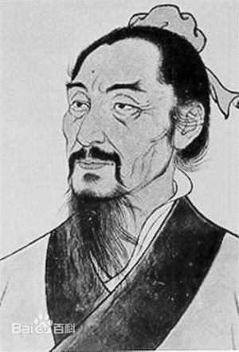
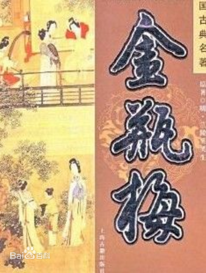
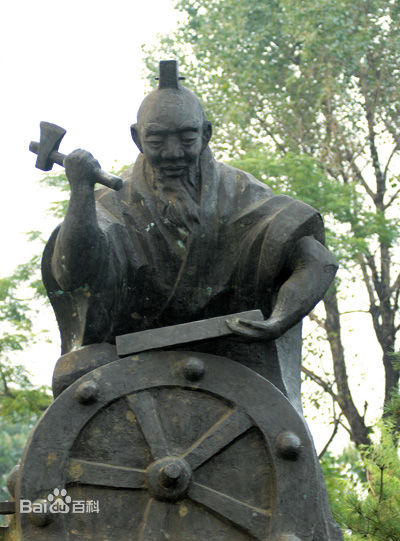
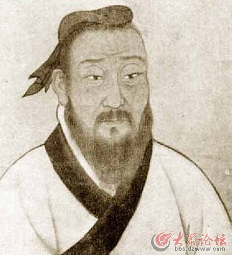

一丶墨子

墨子是宋国贵族目夷的后代 ，生前担任宋国大夫。他是墨家学派的创始人，也是战国时期著名的思想家、教育家、科学家、军事家。 墨子是中国历史上唯一一个农民出身的哲学家，墨子创立了墨家学说，墨家在先秦时期影响很大，与儒家并称“显学”。他提出了“兼爱”、“非攻”、“尚贤”、“尚同”、“天志”、“明鬼”、“非命”、“非乐”、“节葬”、“节用”等观点。以兼爱为核心，以节用、尚贤为支点。墨子在战国时期创立了以几何学、物理学、光学为突出成就的一整套科学理论。在当时的百家争鸣，有“非儒即墨”之称。墨子死后，墨家分为相里氏之墨、相夫氏之墨、邓陵氏之墨三个学派。其弟子根据墨子生平事迹的史料，收集其语录，完成了《墨子》一书传世。
二丶兰陵笑笑生
 兰陵笑笑生，是“第一奇书”《金瓶梅》的作者所用的笔名。此人真实身份已成为历史谜团。《金瓶梅》廿公跋说“《金瓶梅传》，为世庙时一巨公寓言”。明沈德符《万历野获编》则说他是“嘉靖间大名士手笔”。 作为中国文学史上第一位独立创作长篇小说的作家，兰陵笑笑生在小说创作上达到了前所未有的高度，他所创作的《金瓶梅》以市井人物与世俗风情为描写中心，开启了文人直接取材于现实社会生活而创作长篇小说的先河。
兰陵笑笑生，是“第一奇书”《金瓶梅》的作者所用的笔名。此人真实身份已成为历史谜团。《金瓶梅》廿公跋说“《金瓶梅传》，为世庙时一巨公寓言”。明沈德符《万历野获编》则说他是“嘉靖间大名士手笔”。 作为中国文学史上第一位独立创作长篇小说的作家，兰陵笑笑生在小说创作上达到了前所未有的高度，他所创作的《金瓶梅》以市井人物与世俗风情为描写中心，开启了文人直接取材于现实社会生活而创作长篇小说的先河。
三丶奚仲

奚仲东夷薛国人（今山东省滕州市），夏朝时期工匠。相传其发明了两轮马车。据《滕县志》记载：“当夏禹之时封为薛，为禹掌车服大夫。奚仲生吉光，吉光是始以木为车。以木为车盖仍缵车正旧职，故后人亦称奚仲造车。”奚仲因造车有功，被夏王禹封为“车服大夫”（亦称“车正”）。 马车的出现，其贡献不亚于“四大发明”，奚仲是古薛国地面上出现最早的、最大的发明家、政治家，过世后被百姓奉为车神。后人在薛城区千山头修建了奚公祠常年祭拜，以求出行平安。“祭拜奚仲，平安出行”的民谚流传至今。
四丶左丘明

左丘明姓左名丘明，枣庄市山亭区小邾国人。左丘明是春秋末年我国著名的政治家、军事家、思想家、文学家和 史学家。公元前452年前后，左丘明因病逝世。根据左丘明生前嘱托，左丘明这位史学巨匠死后葬在他的故国君山（抱犊崮历史称君山）下，遗体安葬于其生前所植银杏树“一箭之地”的君山都的地上...... 死后依“不封不树”的周制，葬于娄山之阿（抱犊崮最早的名称），时人为纪念这位伟人将娄山更名为君山，意在愿“鲁君子”的英名与此山同在。 左丘明著有《左传》《国语》《《世本》《春秋》的左丘明在我国文学史、史学史上占有举足轻重的地位。与孔子“同圣”的左丘明，世称“鲁君子”以孔子之“圣”， 作为史学界伟大的先行者，左丘明是我国真正史学意义上的伟大史学家、我国古代的伟大思想家、伟大历史散文家与谱系拓荒人。他一生可得考证的著作有《左传》、《国语》、《世本》等。其史直接影响太史公司马迁 的《史记》及后世史学，其文直接影响唐宋以降的历代文人与科举，其政治思想与道德理念直接影响着2000多年中华民族的心灵，且至今不衰。他的《左传》、《国语》为炎黄子孙赋展出一幅春秋时期全方位社会画面，他的《世本》不止为华夏子孙稽祖溯源提供依据，也为后世谱系之学开了先河。
返回上一级